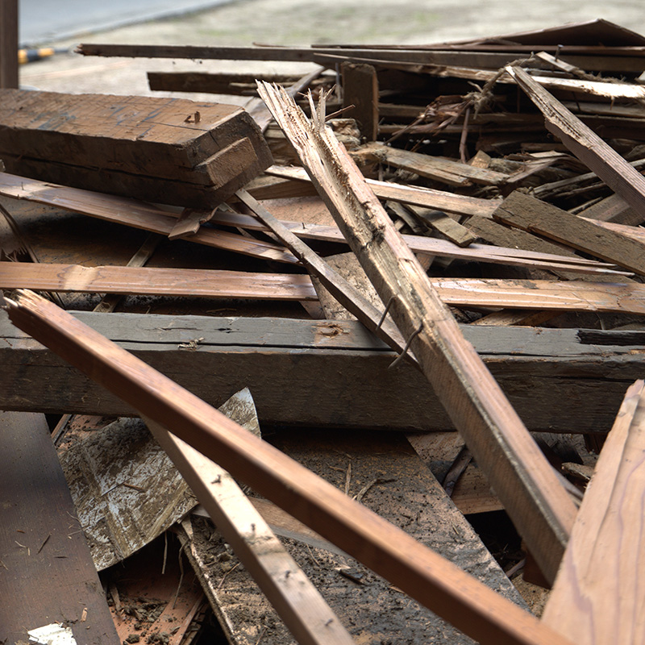
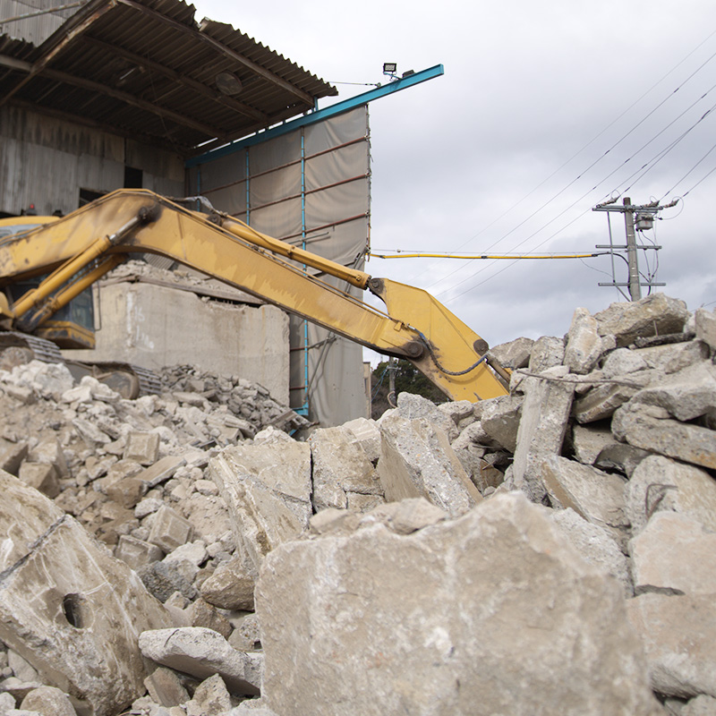
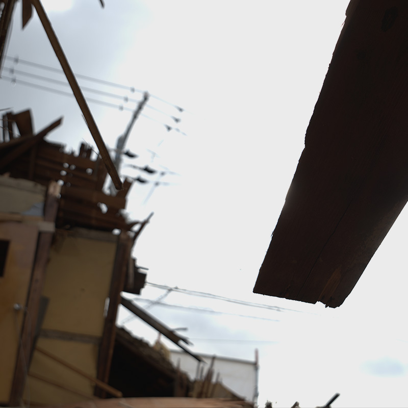
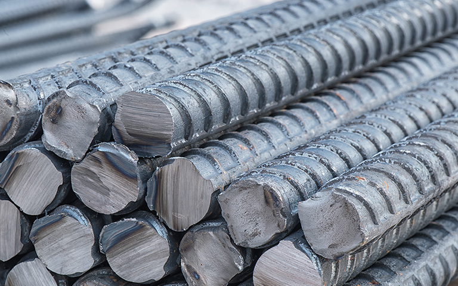
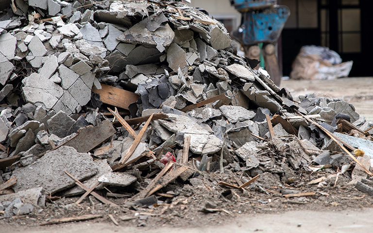
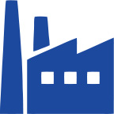
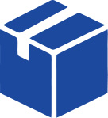
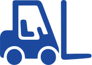

運搬
解体現場で発生した産業廃棄物などを、弊社中間処理場へと運搬します。※持ち込みも対応。
産業廃棄物回収




エコ・プランニングは解体工事だけでなく、産業廃棄物の回収から最終処分まで一貫対応しております。三重県下最大級となる1,400社もの取引実績を誇り、最初から最後まで責任を持って対応いたします。廃棄物の回収・処分はぜひ弊社にご相談ください。
どこの業者に頼めばいいかわからない、きちんと処理してもらえるか不安、といったお悩みにも丁寧に対応します。リサイクル率の向上やコスト削減など、廃棄物処理の最適なご提案も可能です。クラウド上での電子契約システムを導入しており、県外からでも約2〜3分で委託契約を締結いただけます。
人手不足・ドライバー不足による廃棄物搬出の遅れは、工期やコストに直結します。弊社に回収を依頼することで搬出の回転率が上がり、分別・運搬の手間を削減できます。ぜひご相談ください。
回収スピードの速さが強みです。最短当日、遅くとも3日以内に回収にお伺いします。細かな材料の余りや処分品も、そのつど処分せずまとめてお引き取りいたします。お気軽にご相談ください。
廃棄物の種類や
処分業者の選び方がわからない

手続きや
書類対応が煩わしい

不法投棄や
法令違反が心配だ
県内外に1,400社以上の取引先があり、年間12,000件の廃棄物回収・受入実績を誇る産業廃棄物処理業のエキスパートです！創業半世紀以上の歴史と信頼を基に、お客様に最適なソリューションを提供します。
feature
01

弊社では大小合わせて6種類以上のコンテナを取り揃えており、幅広い現場に対応しています。
feature
02

弊社のコンテナは標準で長さ2.4m³と他社より一回り大きく、鉄筋・鋼板・木材などの長物もそのまま投入できます。無駄に大きいコンテナを設置したり、長物を切断する手間が不要です。
feature
03

グループ会社を含め1,400社以上のお客様と産業廃棄物関連のお取引があるため、細かな手続きや書類対応にも豊富なノウハウで対応できます。
feature
04

弊社ではグループ会社にて最終埋立処分場を保有しているため、処理体制も整っており、マニフェストの返却もスムーズで最短で当日最終のE票の返却が可能です。
feature
05

すでに弊社お客様の3割以上が電子マニフェストを導入済みで、全体取引の電子マニフェスト使用率は7割ほどになってきております。導入をご検討の方には、担当者が使用方法や費用についてご説明いたします。お気軽にお問い合わせください。
feature
06

約25年前、三重県で初めてユニッククレーン式コンテナ回収システムを開発。現在では三重県内を中心に年間12,000件のコンテナ回収、1,400社以上のお客様とお取引しております。長年培った実績と信頼で、今後もお客様の廃棄物処理を支えてまいります。
feature
07

三重を拠点に全国対応する解体工事のプロとして、産廃処理と一体でお任せください。犬小屋や物置、ビル・大型施設の解体に至るまで、電話・LINE・お問い合わせフォームよりお気軽にご相談ください。
feature
08

廃棄物を直接弊社工場へ持ち込むことも可能です。予約不要で受け入れており、電子契約システムにより契約もその場で迅速に締結できます。
feature
09

回収範囲：三重県、愛知県、岐阜県、奈良県、京都府、滋賀県などなど、その他地域でも弊社提携先収集運搬業者とのマッチングが可能です。
受入品目一覧
掲載の商品はあくまで過去施工事例に基づく参考価格になりますので、くわしい内容や見積もりはお気軽にお問い合わせください
| 種類 | 備考 |
|---|---|
| 廃プラスチック | |
| 木くず | 伐木・生木・根除く |
| 紙くず | ※汚れ、濡れ不可 |
| 繊維くず（畳以外） | 羊毛くず・木綿・藁・萱・絨毯など |
| 上記可燃混合物 | 木くず・紙くず・繊維くず・廃プラスチックのみ |
| 金属くず | ※異物付着不可 |
| ガラスくず | ※ワイヤー、メッシュ入りは複合ガラスとして別途料金 |
| アスファルト塊 | 80cm以上は別途料金 |
| コンクリート塊 | 80cm以上は別途料金 |
| 管理型がれき類（サイディング、ケイカル板等） | 紙質、木質などの異物混入分 |
| コンクリート二次製品 | 80cm以上は別途料金 |
| その他ガレキ類（煉瓦・瓦・陶磁器） | 80cm以上は別途料金 |
| 上記混合物 | 石膏ボード・壁土・量及び石綿被疑材は対象外 |
| 種類 | 備考 |
|---|---|
| 生木 | |
| 竹 | 根より上の部分（根は含まず） |
| 竹・木の根 | |
| 杭木 | |
| 木毛板 | |
| 超軽量物 | 発泡スチロール・グラスウール・ウレタンを分別必須 ※濡れ厳禁 |
| 浄化槽 | |
| 漁網・ロープ・ネット | ※金属類・その他異物付着不可 |
| 蛍光灯・電球 | ※破損及び割れている場合 別途料金 |
| 畳 | ※異物の付着厳禁 |
| 濡れ・腐食畳 | ※異物の付着厳禁 |
| スプリング付ベッドマット（ダブル） | ※ダブル以上の場合 別途料金 |
| スプリング付ベッドマット（セミダブル） | |
| スプリング付ベッドマット（シングル） | |
| スプリング無ベッドマット | ※厚み10cmまで |
| ソファ | |
| 自然石 | 巨石は別途お問合せ下さい。 |
| 壁土 | ガレキ・木くず15cmまでその他混入不可 濡れる場合別途料金 |
| 解体ミンチ | |
| 消火器 | ※現在、受入停止 |
| 石膏ボード（乾燥している状態） | |
| 石膏ボード（濡れている状態） | |
| タイヤ | ※大型・特殊タイヤ 別途料金 |
| バッテリー | ※バッテリー廃液漏れ厳禁 ※現在、受入停止 |
| 複合素材（2種類の廃棄物が付着いる状態） | ※形状・重さ・材質・量などにより決定 |
| 非飛散性石綿含有物（がれき類） | |
| 非飛散性石綿含有物（廃プラスチック類） | Pタイル等 |
| 塗料 水性に限る | 水性に限る ※現在、受入停止 |
| 動物性植物性残渣 | ※現在、受入停止 |
| 汚泥 | 有機物に限る ※現在、受入停止 |
| 機密書類 | ※現在、受入停止 |
| ゴムキャタ | サイズにより変動 |
※複合素材については材質、形状を協議の上、別途料金を請求させて頂きます。
※混合物の中に指定された以外の廃棄物が混入されている場合別途料金を頂きます。
| 商品名 | 価格 | 備考 |
|---|---|---|
| 再生砕石 RC40 | 0.6円/kg | 駐車場などの砂利や路盤材に使用可能。 工場渡し、運搬も可能※条件応相談 |
処分の流れ・仕組み
解体現場で発生した産業廃棄物などを、弊社中間処理場へと運搬します。※持ち込みも対応。

種類に合わせて、自社処理場にて適切な方法を用いて処分作業を行います。

自社で品目ごとにリサイクルをおこないます。

自社でリサイクル処理ができない廃棄物は二次処理先に委託し、リサイクルします。

弊社提携会社の安定型最終処分場で処分します。（主に非飛散性石綿含有物）
各品目の処分方法とリサイクル後

日用品の容器、袋、フタ、フィルムなど
処理後
ダンボールや製紙工場、印刷工場から発生した廃棄紙など
処理後
ダンボール、トイレットペーパー、再生紙等
衣類、ベッドマットなどの繊維くずなど
処理後
発電用燃料
固形燃料
各種金属部品、RC造・S造の鉄筋など
処理後
製鉄原料
非鉄原料
製鋼原料
解体時に発生した窓ガラスや便器などの陶器類など
処理後
埋め戻し材、路盤材
道路の改修工事、建造物の解体の際に発生したコンクリート、アスファルトなどのがれき類など
処理後
内壁や天井材として使用されている石膏ボードなど
処理後
石膏→路盤材、建設資材
紙くず→製紙原料
ご依頼の流れ
電話またはお問い合わせフォームより、
ご連絡お願いいたします。

現地、御社事務所等にて廃棄物の確認をさせていただきます。
設置場所の地図と設置箇所の図面等をお送りください。
契約や見積もりもその後提出いたします。
お持込の方については、これ以上の手続きは必要ありません。
予約不要でいつでも持込可能です。
お電話、LINE、メールにて弊社事務所まで所定の依頼書お送りいただきその後、現場にお伺いします。そして必要な情報をご提供いただき、使用用途に応じて、ご希望のサイズのコンテナを設置させていただきます。

お電話、LINE、メールにて弊社事務所まで所定の依頼書お送りいただきその後、現場にお伺いします。
最短で翌日〜3日にて回収にお伺いたします。

内容物に応じて適切な工場に搬入し、処分いたします。

お問い合わせ
解体、産業廃棄物回収・持込、
不用品回収からハウスクリーニングまで
お困りごとは何でもお気軽にご相談ください。